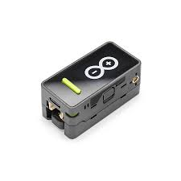
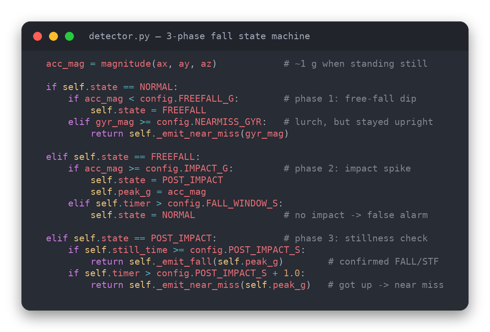
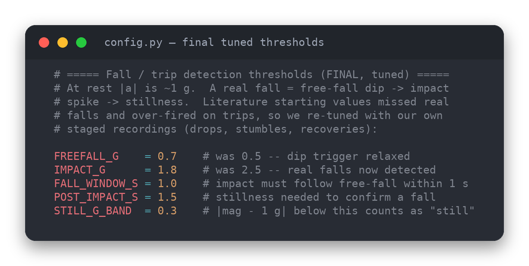
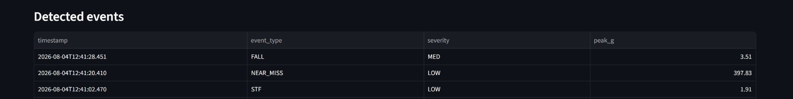
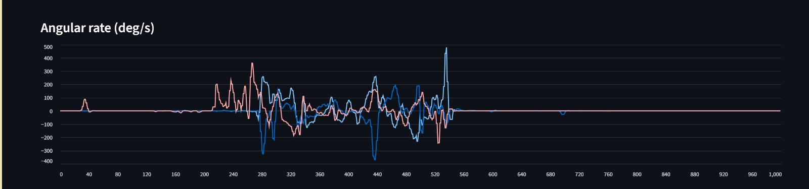

Calculated total acceleration magnitude and total gyroscope magnitude so the logic could respond to movement regardless of direction.
EG2A17 · DATA ENGINEERING PROJECT
Construction Worker Safety Monitoring System
A wearable sensor-to-dashboard pipeline that uses an Arduino Nesso N1, Bluetooth Low Energy and Python to identify movement patterns associated with falls, slip-trip-falls and near misses.

RoleData Processing & Detection
System typeReal-time IoT data pipeline
Sensor data6-axis IMU · 100 Hz
Project formatTeam project
01 / PROJECT SCOPE & PROBLEM
Detecting the events that are easy to miss.
Construction sites are high-risk environments where falls and slip-trip-fall incidents can cause serious injury. Near misses matter too: a worker may lose balance or stumble, recover, and never generate a conventional “fall” alert.
The goal was to build a cost-effective prototype that could continuously collect worker movement data, detect possible safety incidents, store the results and make the information easy for a supervisor to review. The project therefore required an end-to-end data pipeline, not just a sensor or a dashboard.
SYSTEM ARCHITECTURE
From movement to a safety alert.
01Nesso N1Accelerometer + gyroscope
02BLE100 Hz sensor stream
03PythonValidate + process + detect
04MariaDB / SQLiteReadings + events
05StreamlitTrends + alerts + history
02 / MY ROLE & SOLUTION
I focused on the layer that turns sensor readings into decisions.
My primary contribution was data processing and detection. I worked on combining raw X, Y and Z sensor values into movement features, developing the rule-based state machine, testing event behaviour and tuning the detection thresholds.
Developed and tested a state-machine approach that looks for a sequence of free-fall, impact and post-impact behaviour, with rotational spikes used for near-miss detection.
Used controlled staged tests and offline replay to compare detected events against recorded ground truth, then adjusted thresholds to improve practical triggering.
Worked within the shared Python pipeline so the same processed events could be stored in the database and surfaced to the dashboard.
03 / WORK PROCESS
A pipeline designed for clean, explainable data.
01
Collect
The Nesso N1 samples three-axis acceleration and three-axis angular rate at 100 samples per second.
02
Transmit
The Arduino C++ program packages the six values and sends them to the computer over Bluetooth Low Energy. Python receives the notifications using Bleak.
03
Validate
Incoming packets are decoded, checked for exactly six numerical values and rejected if they are malformed or outside the Nesso sensor limits.
04
Store
MariaDB is the main structured store. SQLite is supported as a secondary fallback so the pipeline can still operate locally when MariaDB is unavailable.
05
Engineer features
Acceleration and gyroscope magnitudes are calculated, and a five-sample moving average is available during offline processing to reduce small fluctuations.
06
Detect & visualise
The detector classifies FALL, STF and NEAR_MISS events, then Streamlit displays active alerts, sensor trends and the event history.
PROJECT EVIDENCE
Code, testing and live output.
The portfolio uses real material from the completed project rather than stock imagery.




Controlled testing clip
A short project recording showing the type of staged movement testing used during development.
04 / OUTCOME & RESULTS
A complete working prototype — with limitations made explicit.
The completed prototype successfully collected real-time accelerometer and gyroscope data over BLE, cleaned and stored the readings, generated FALL, STF and NEAR_MISS events from controlled movement patterns, and displayed sensor graphs, event records and active alerts in Streamlit.
Sensor collection, ingestion, processing, storage, detection and visualisation were integrated into one workflow.
Raw IMU readings and detected events were stored in database tables for later querying and analysis.
The dashboard exposed active alerts, recent sensor trends, event counts and historical event details.
What I would improve next
The detector currently depends on fixed thresholds and was tested mainly in controlled conditions. A production version would need broader real-world testing to measure false positives and false negatives across different workers and movement styles. Future enhancements could include on-device edge detection and large-scale supervisor alerts.